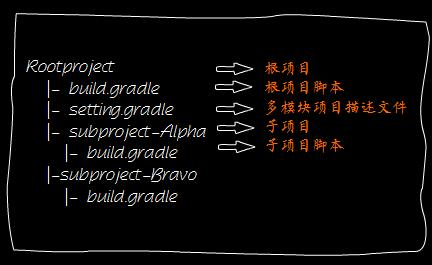
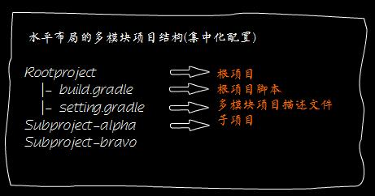
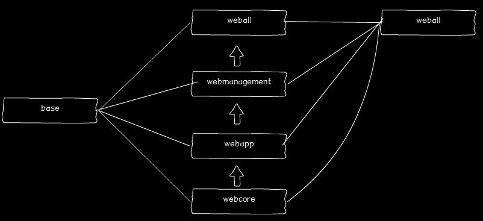

概述#
随着项目规模的扩展和功能的增加，任何一个简单的项目基本都会进行模块的拆分独立，然后通过项目之间的依赖进行重新整合。
项目拆分带来的好处也显而易见。拆分可以是项目结构更加清晰，职责划分更加明确，相关模块的负责人只需专注于自己负责的子模块而无需对整个项目进行一次构建。
如果不采用构建工具或许最原始的方式无非于将一些相对独立的和公共的模块代码拆分成独立项目，通过手工打jar包替换的方式进行多项目之间的依赖管理，这无疑是低效、繁琐且没有价值的工作。
Gradle对多模块项目有着优秀的支持，现在借助于Gradle可以把你从一些低价值的劳动中解放出来。你可以肆意的采用水平或者分层的方式组织你的项目模块，肆意的进行模块之间的依赖，甚至是模块之间深层次的依赖。举个栗子，如果有个web工程依赖于一个util工程和一个common-service工程，那么当util和common-service进行了任何修改，在web工程进行打包的时候会自动编译打包依赖的util和common-service工程，如果你采用了合理的依赖声明那么在发布war的时候这两个工程的会被自动打成jar包打进最终的war中。
这一章节你将会了解到如下内容
- 多模块项目结构
- 多模块项目脚本
- 构建分层布局的多模块项目
- 构建集中化配置的多模块项目
项目结构#
在进行介绍之前，这里有必要先解释一下项目（project）和模块（module）的概念。Gradle中默认是不存在模块概念的，这里指的多模块项目构建对应到Gradle中即是多项目构建，为了便于理解，所以本文中一律按多模块进行描述。
关于多项目和多模块的分歧无法溯源，或许是由于
eclipse和idea不同定义而起吧。在eclipse中不存在模块概念，走的是workspace - working set - project路线，而在idea中，则是按project - module进行组织项目。自从转为idea党之后，私以为idea的路子更科学，所以这里按idea的套路进行描述。
下面展示了分层布局和水平布局的两种多模块项目结构


为了更加直观，这里项目结构采用了分层布局的方式。这也是Gradle默认的布局方式。这里根项目是必不可少的，尽管在分层布局中它看上去更像是一个顶级的working set。其中根项目下的build.gradle文件可以对一些公共属性、插件、依赖等进行统一配置，setting.gradle则是描述项目关系的文件。
或许你已经注意到，在水平布局的示例图中子项目下没有build.gradle脚本文件,这是由于在构建多模块项目时 Gradle 允许你自由的选用集中化配置和分开式配置。在水平布局的结构图中，所画的即是采用集中化配置的结构。
settings文件#
我们了解到一个典型的多模块项目需要有一个根模块项目以及模块描述文件(默认为settings.gradle)，下面我们将通过一个 多项目示例 来对多模块项目的结构以及脚本进行更深入的了解。
如果要让 Gradle 支持多
构建，只需为你的项目确定一个 根模块项目 并且在根模块项目下添加 settings.gradle 文件用以描述模块（项目）关系1
include 'base','main'
这里将模块（项目）名称路径的字符串以数组的形式传递给了include函数，Gradle 会以相对于当前目录按照 include 给定的模块（项目）路径查找对应的子模块，如果要声明的模块（项目）有多个层次可以用:进行描述，假设main下面又分了Alpha,Bravo 那么声明方式则按如下方式书写1
include 'base','main:Alpha','main:Bravo'
这里的 settings 文件实际上是对应的 Settings 接口，Setitings 接口中提供的函数在本脚本中都是可用的，具体细节请查阅 >Settins接口DSL< 文档进行了解。
在构建的 初始化阶段，Gradle 会读取这个文件，并创建一个 Settings 类型的实例。Gradle 会依据此文件进行多模块项目构建，默认情况下 Gradle 会从同级的 master 目录下寻找此文件，如果未找到则会去父级目录寻找。如果搜寻不到 settings 文件，那么 Gradle 会把模块当做单独构建的项目去执行单独构建。这里 Gradle 提供了一个命令行参数 -u 或 --no-search-upward 来控制 Gradle 不去父目录搜寻 settings 文件。
默认情况下，Gradle 会采用settings.gradle作为文件名去查找，但如果处于某种不可描述的原因要采用其它名称的话也是可以的，调用命令时可以通过-c或者--settings-file参数来指定settings文件的位置以及名称。
tip: 通常情况下，不存在孤立的子模块，所以构建的执行顺序往往是由依赖顺序所决定的。但如果无法通过依赖顺序决定，那么 Gradle 会简单的按照首字母顺序决定构建顺序。
build文件#
在根项目下，除了 settings.gradle 文件之外，通常还需要提供一个 build.gradle 文件，该文件用以定义子模块行为以及描述项目的一些公共插件、属性、依赖等。
下面的示例中，定义了所有模块共享的group、版本号，所有子模块共享的插件，以及针对main项目的定制化配置。1
2
3
4
5
6
7
8
9
10
11
12
13
14
15
16
17
18
19
20// 所有模块都采用统一的版本号以及groupName
allprojects {
group = 'org.pkaq.gradle.multi'
version = "0.1.0"
}
// 为所有子模块都应用java插件
subprojects {
apply plugin: 'java'
}
//为main模块定义特定行为,采用war插件并且依赖base模块
project(':main'){
apply plugin: 'war'
dependencies {
compile project(':base')
}
}
如果您阅读了上一小节，settings文件是对Settings接口的脚本化编程实现，那么此处同理，借由 Project API，可对模块的行为进行定制。
| 方法名 | 描述 |
|---|---|
| allprojects | 配置当前模块以及所有子模块行为 |
| subprojects | 配置所有子模块行为 |
| project | 配置指定子模块行为 |
可以查阅 > Project DSL < 了解 Project 接口的更多操作。
此时可以通过执行 gradle build 来进行构建，这会按照依赖的顺序构建所有子模块，如果要单独构建某个子模块那么可以参照 gradle :main:build 的方式进行单独构建，正如你所见用:分隔项目和task即可。
分离配置#
当项目足够复杂的时候，采用集中化配置显然不是一个好计谋，尤其是如果你有几十个模块的的时候，当你打开一个几百行的脚本无疑会感到一种不由自主的恶心在背后拍拍你的肩膀说:”兄弟 吐吧”….
此时，将不同项目的定制行为分离到各自的脚本里无疑会显著的减轻你的饱腹感。这不仅可以是项目结构看起来更加清晰，脚本更加易读，分离化的配置还可以让你更好的关注子模块的特定行为。
要分离模块配置只需要很简单的两步：
- 在子模块建立
build.gradle文件 - 将原来的
project(':xxx'){}内的脚本移动到上面建立的文件中去
下面的图展示了一个稍微复杂一点的分层布局的、多模块的、分离配置的 的多模块项目示例，其中所有的二级模块都依赖base，最终的weball又依赖于所有的二级模块。
具体代码可以查看 > 就是这里 <

水平布局和分层布局#
如果你阅读了前面的内容，那么你已经掌握了分层布局。没错，Gradle 默认即是采用的分层布局。只需要正确的配置 settings 文件即可。
某些情况下，若是出于一些不可描述的原因需要进行水平布局，那么 Gradle 也提供了良好的支持。如果你之前曾经翻阅过 Settings 接口的手册，那么或许你已经发现Settintgs接口提供了一个includeFlat方法，借助此方法即可实现水平布局的多模块项目。
1
includeFlat 'base'
由于此处main即是根项目，所以无需再包含main
完整示例 -> > 水平布局的多模块项目示例 <
心法在于两点:
1.根项目与被依赖的项目(在水平意义上的子项目,视觉上根项目的兄弟项目)保持平级。
2.配置根项目的 setting.gradle ， 采用 includeFlat 来描述子项目路径(由于采用的是水平布局,默认根路径就是当前根项目的上级路径,所以无需用../上跳)